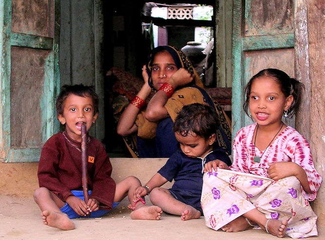
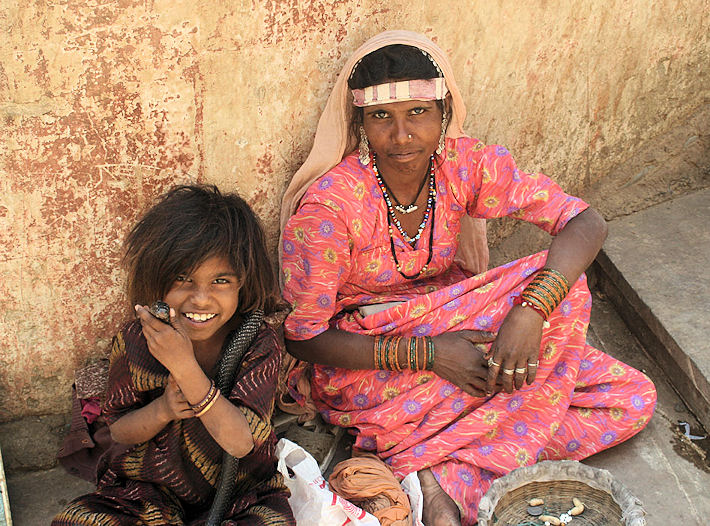

mailto:payer@payer.de
Zitierweise | cite as:
Payer, Alois <1944 - >: Sanskritkurs. -- 14. Lektion 14. -- Fassung vom 2008-12-01. -- URL: http://www.payer.de/sanskritkurs/lektion14.htm
Erstmals hier publiziert:
Überarbeitungen:
Anlass: Lehrveranstaltungen 1980 - 1984
©opyright: Dieser Text steht der Allgemeinheit zur Verfügung. Eine Verwertung in Publikationen, die über übliche Zitate hinausgeht, bedarf der ausdrücklichen Genehmigung des Verfassers
Dieser Text ist Teil der Abteilung Sanskrit von Tüpfli's Global Village Library
Falls Sie die diakritischen Zeichen nicht dargestellt bekommen, installieren Sie eine Schrift mit Diakritika wie z.B. Tahoma.
Die Devanāgarī-Zeichen sind in Unicode kodiert. Sie benötigen also eine Unicode-Devanāgarī-Schrift.
| Soll das Verhältnis des durch zwei Substantive ausgedrückten bezeichnet werden, verwendet man den Genetiv (ṣaṣṭī f. "sechste Kasusendung"). Der Genetiv unterscheidet sich von allen übrigen Kasus dadurch, dass er -- mit wenigen Ausnahmen -- nicht zur näheren Bestimmung der durch das Verb ausgedrückten Handlung dient, sondern zum Ausdruck des Verhältnisses zwischen Personen oder Sachen, die durch Substantive bezeichnet werden. Häufig steht der Genetiv auf die Frage: Wessen? |
Beispiele:
कवेः पुत्रः "Des Dichters Sohn"
धन्स्य लोभः "Gier nach Reichtum"
नगरस्यार्धम् "Die Hälfte der Stadt"
रामस्य कृतम् "Die / Eine Tat Rāmas"
| Die normale Wortstellung ist: Bestimmendes Wort im Genativ - Näher bestimmtes Substantiv in einem anderen Kasus |
Genetiv und PPP:
| Bei PPPs kann der Genetiv statt des
Instrumentalis (tṛtīyā) für den Agens (kartṛ) stehen; In der
Konstruktion mit dem Instrumentalis wird das PPP als passive
Verbalform betrachtet (das im Instrumentalis Stehende bezeichnet den
Agens), in der Konstruktion mit dem Genetiv wird das PPP als
Substantiv bzw. Adjektiv betrachtet (das im Genetiv Stehende also
nicht eigentlich als Agens).
Nach Pāṇini 2.3.67 steht beim PPP der Genetiv, wenn das PPP präsentische Bedeutung hat (siehe oben), der Instrumentalis, wenn das PPP Vergangenheitsbedeutung hat.: रामस्येष्टं फलम् "Die von Rāma gewünschte Frucht = Die Frucht, die Rāma gegenwärtig wünscht" रामेणेष्टं फलम् "Die Frucht, die Rāma gewünscht hat" Selbstverständlich steht bei einem PPP Neutrum Singular, das als Verbalabstraktum - also als Substantiv - gebraucht wird, der Genetiv. |
Der Genetiv wird bei Verbalstämmen mit Stammabstufung vom schwachen Stamm gebildet.
Genetiv von konsonantisch auslautenden Stämmen:
Nach Konsonant sind die regelmäßigen
Genetivendungen:
|
z.B.
Nominalstamm Schwacher Stamm Genetiv Singular Genetiv Plural guṇa-vant-
गुणवन्त्guṇa-vat-
गुणवत्guṇa-vat-as
गुणवतस्guṇa-vat-ām
गुणवताम्paśu-mant-
पशुमन्त्paśu-mat-
पशुमत्paśu-mat-as
पशुमतस्paśu-mat-ām
पशुमताम्
Genetiv von vokalisch auslautenden Stämmen, außer einsilbigen Wurzelnomina und diphtongisch auslautenden Stämmen:
Plural:
| Der Genetiv Plural vokalisch auslautender
Stämme wird so gebildet: -langer auslautender Vokal des Stammes + -nām |
z.B.
Nominalstamm Genetiv Plural deva m.
देवdevā-nām
देवानाम्phala n.
फलphalā-nām
फलानाम्devatā f.
देवताdevatā-nām
देवतानाम्kavi m.
कविkavī-nām
कवीनाम्śruti f.
श्रुतिśrutī-nām
श्रुतीनाम्devī f.
देवीdevī-nām
देवीनाम्paśu m.
पशुpaśū-nām
पशूनाम्dhenu f.
धेनुdhenū-nām
धेनूनाम्
Genetiv Singular vokalisch auslautender Stämme:
| Der Genetiv Singular vokalisch auslautender Stämme wird unregelmäßig gebildet und ist gut auswendig zu lernen. | |
| Stamm | Genetiv Singular |
| deva m. देव |
devasya देवस्य |
| phala n. फल |
phalasya फलस्य |
| devatā f. देवता |
devatāyās देवतायास् |
| kavi m. कवि |
kaves कवेस् |
| paśu m. पशु |
paśos पशोस् |
| devī f. देवी |
devyās देव्यास् |
| śruti f. श्रुति |
śrutes / śrutyās श्रुतेस् / श्रुत्यास्व् (d.h.
entweder wir kavi oder wie devī) |
| dhenu f. धेनु |
dhenos / dhenvās धेनोस् / धेन्वास् (d.h. entweder wir paśu oder wie mehrsilbige Feminina auf -ū) |
Fragepronomen und Demonstrativpronomen:
| kim | tad | etad | idam | ||
|---|---|---|---|---|---|
| Maskulinum / Neutrum |
Genetiv Singular |
kasya कस्य |
tasya तस्य |
etasya एतस्य |
asya अस्य |
| Genetiv Plural |
keṣām केषाम् |
teṣām तेषाम् |
eteṣām एतेषाम् |
eṣām एषाम् |
|
| Femininum | Genetiv Singular |
kasyās कस्यास् |
tasyās तस्यास् |
etasyās एतस्यास् |
asyās अस्यास् |
| Genetiv Plural |
kāsām कासाम् |
tāsām तासाम् |
etāsām एतासाम् |
āsām आसाम् |
Formengleichheit:
|
Bei allen Nominalstämmen mit Ausnahme der Maskulina und Neutra auf -a und den Pronomina ist die Form des Genetiv Singular identisch mit der Form des Ablativ (pañcamī "fünfte Kasusendung") Singular!
Beachten Sie, dass bei konsonantisch auslautenden Stämmen Ablativ und Genetiv Singular gleich lauten wie der Akkusativ Plural Maskulinum und Femininum! |
Entgegen obiger Grundregel wird der
genetiv verwendet, um das Objekt einiger Verben auszudrücken, z.B.
bei Verben des Gedenkens:
Bei all diesen verben kann das Objekt aber auch im Akkusativ stehen:
Weiteres später. |
śīla n. शील : (guter) Charakter, Sittlichkeit
bhūṣ-aṇa n भूषण : Schmuck
dīpa m. दीप : Lampe
Abb.: दीपाः
[Bildquelle: [srijith]. --
http://www.flickr.com/photos/srijith/1918428547/. -- Zugriff am 2008-12-01.
--


 Creative
Commons Lizenz (Namensnennung, keine kommerzielle Nutzung, keine Bearbeitung)]
Creative
Commons Lizenz (Namensnennung, keine kommerzielle Nutzung, keine Bearbeitung)]
bala n. बल् : Gewalt, Kraft, Stärke; Heereskraft, Heerschar
bāla 3 बाल : jung, kindlich, töricht ; m. Knabe
bālā f. बाला : junges Mädchen
nara m. नर : Mann, Mensch
śatru m. शत्रु : Feind
loka m. लोक : Welt; Sing. u. Plur.: die Leute, die Menschen, das Volk
jala n. जल : Wasser
jan 4 Ā (jāyate), Pass. janyate / jāyate, PPP jāta जन् जायते जन्यते जायते जात : geboren werden, entstehen, auftreten
davon:
jan-a m. जन : Geschöpf, Mensch, Leute
vac 2 P (vakti, keine 3. plur.!), Pass. ucyate, PPP ukta वच् वक्ति उच्यते उक्त : sagen, sprechen zu (dvitīyā)
davon:
uk-ti f. उक्ति : Ausspruch, Wort
vac-ana n. वचन : das Sprechen, das Wort
vāk-ya n. वाक्य : Wort, Rede
Übersetzen Sie folgende Sprichwörter und lernen Sie sie auswendig:
निचो वदति न कुरुते
वदति न साधुः करोत्येव ॥१॥
शीलं नरस्य भूषणम् ॥२॥
सत्येन जनानां सुखं भवति ॥३॥
पापा नराः स्वर्गं न लभन्ते ॥४॥
सत्यं लोकस्य दीपः ॥५॥
A) Bilden Sie den Genetiv Singular und Plural zu folgenden Wörtern. Geben Sie Bedeutung und Geschlecht der Wörter an:
१. अनृत
२. ऋषि
३. पाद
४. बुद्धि
५. गुरु
६. स्वर्ग
७. नगर
८. धेनु
९. द्विज
१०. मुक्ता
११. विद्या
१२. वर्ण
१३. द्विजाति
१४. रूप
१५. प्रतिग्रह
१६. सोढ
१७. नायिका
१८. साध्वी
१९. अग्नि
२०. वैश्या
२१. लोक
२२. उक्ति
२३. शत्रु
२४. सुखवन्त्
२५. पुत्रवती

Abb.: पुत्रवती
[Bildquelle: Eileen Delhi. --
http://www.flickr.com/photos/eileendelhi/164047682/. -- Zugriff am
2008-12-01. --

 Creative
Commons Lizenz (Namensnennung, keine kommerzielle Nutzung)]
Creative
Commons Lizenz (Namensnennung, keine kommerzielle Nutzung)]
२६. जल
२७. मार्ग
२८. मोक्ष
२९. शूद्रा
३०. अन्न
३१. साधु
३२. नीति
३३. योध
३४. सत्यवन्त्
३५. लाभ
३६. मोह
३७. गति
३८. प्रश्न
३९. सृष्टि
४०. नेत्र
४१. गुरुता
४२. ईश्वर
४३. कारण
४४. कृत
४५. धर्मवन्त्
४६. युद्ध
४७. दर्शन
४८. धातु
४९. गूढा
५०. ईष्टा (2 Bedeutungen)
५१. उदित
५२. इदम्
५३. किम्

Abb.: अयं बालः कस्याः
पुत्रः ।
Galtaji bei Jaipur (जयपुर)
[Bildquelle: Robert Brauneis. --
http://www.flickr.com/photos/robertbrauneis/2323030267/. -- Zugriff am
2008-12-01. --

 Creative
Commons Lizenz (Namensnennung, keine kommerzielle Nutzung)]
Creative
Commons Lizenz (Namensnennung, keine kommerzielle Nutzung)]
B) Übersetzen Sie:
१. ब्राह्मणस्य पुत्रो ब्राह्मण्या ग्रामं गतः । (2 Möglichkeiten)
२. यज्ञस्याग्निनान्नं दग्धम् ।
३. बुद्धः स्तयस्य बुद्ध्या मुक्तः ।
४. अधर्मो ऽनृतस्य वदनमित्यृषयो वदन्ति ।
५. नरा देवानां यज्ञैर्न मुच्यन्ते ।
६. बलवन्तः क्षत्रियाः शत्रूणां धनवन्ति नगराणि जयन्ति ।
७. कवेरुक्तिं शृण्वन्ति ।
८. कविर्देव्याः कृतं वदति ।
९. द्विजाः पशोर्लाभमिच्छन्ति ।
१०. रामः पुण्यवतो गुरोर्मन्त्रस्य स्मरति ।
११. अयं बालः कस्याः पुत्रः ।
१२. केषामिमानि गृहाणि ।
१३. कस्यान्नमनेनर्षिणेष्टम् ।
Abb.: केषामिमानि
गृहाणि ।
Fischerdorf, Kerala (കേരളം)
[Bildquelle: FriskoDude. --
http://www.flickr.com/photos/friskodude/1148923/. -- Zugriff am 2008-12-01.
--


 Creative
Commons Lizenz (Namensnennung, keine kommerzielle Nutzung, keine Bearbeitung)]
Creative
Commons Lizenz (Namensnennung, keine kommerzielle Nutzung, keine Bearbeitung)]
Zu Lektion 15